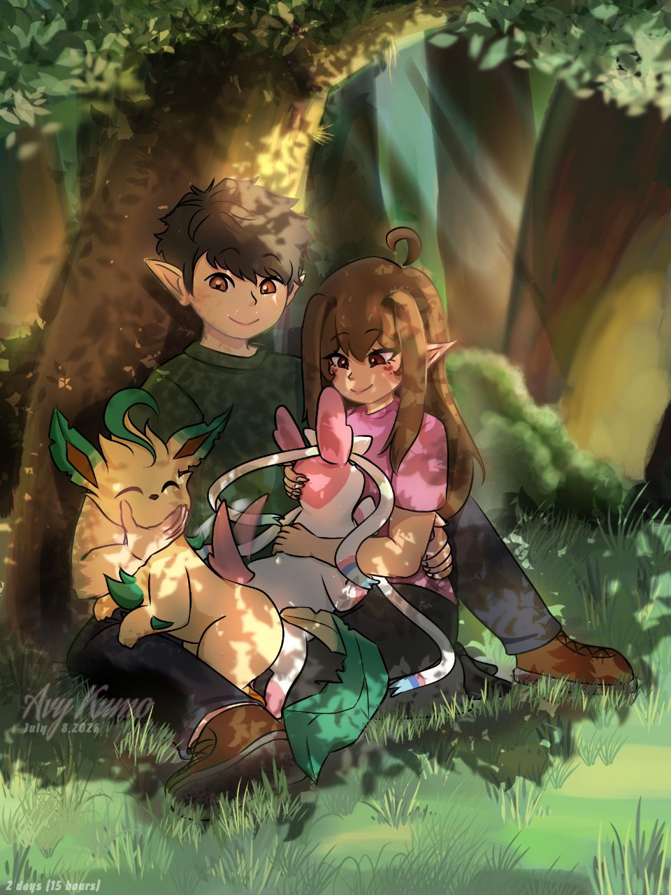

I used to think that to be a great traveler—to survive the weight of infinite realities and endless variables—meant constantly moving forward, calculating the next objective, and winning every single unseen battle against the rot of the cosmos.
I’ve crossed timelines where the stars themselves burned out, carrying the echoes of a thousand versions of myself. But none of those infinite paths ever mattered quite like this one.
Sitting right here under the shade of the trees with you, with the quiet rustle of the leaves and the absolute peace of just being... I think I’ve finally found what actually matters. Out of all the universes I've ever drifted through, this is the only timeline I ever want to stay in.
Happy Birthday, Avy. Thank you for being my favorite constant.